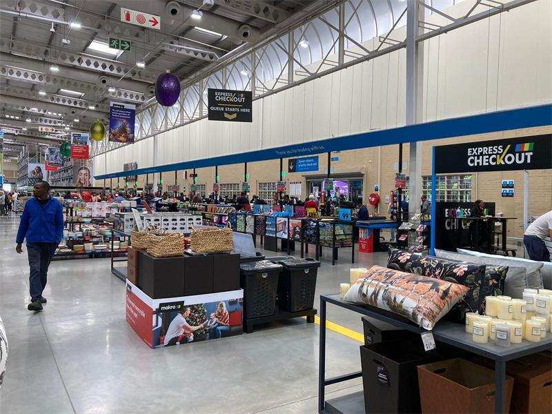
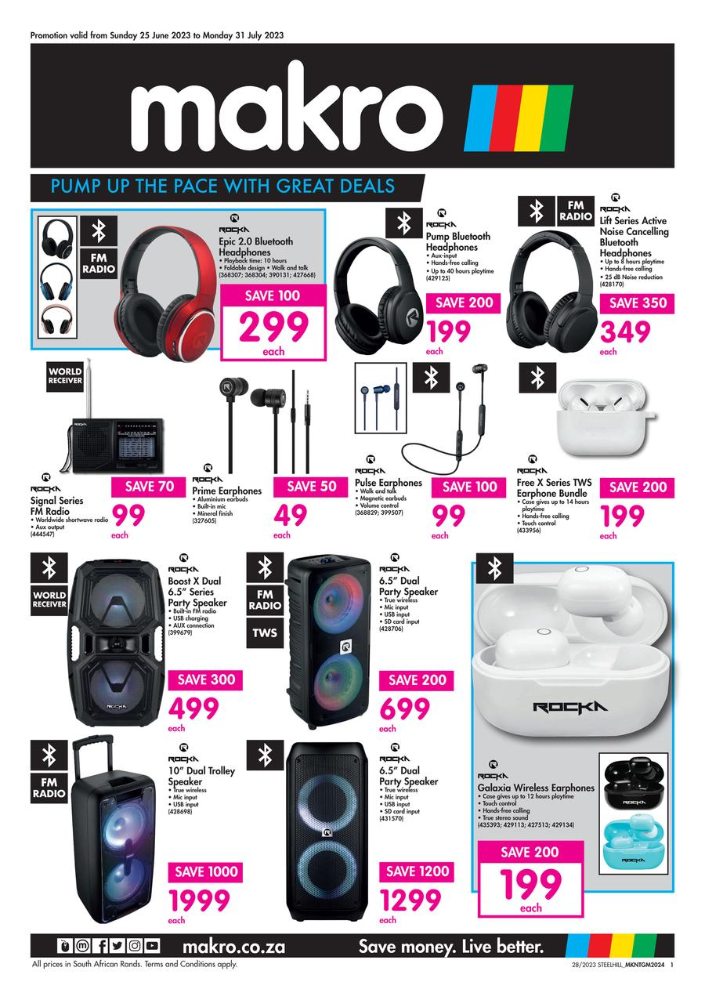
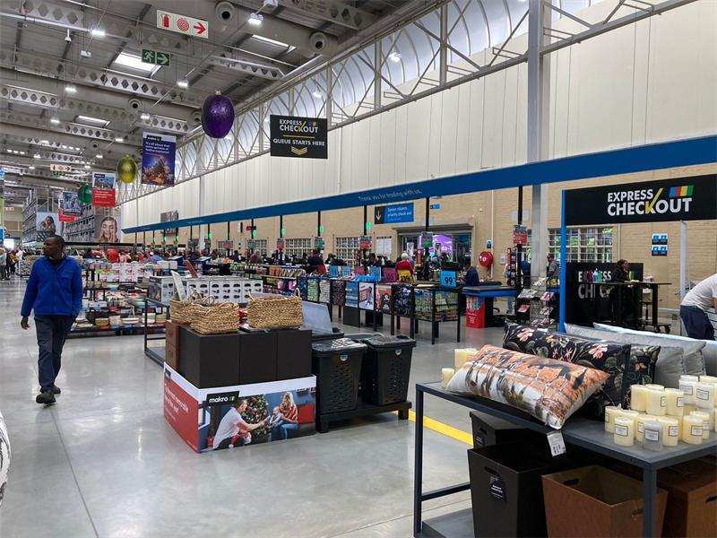
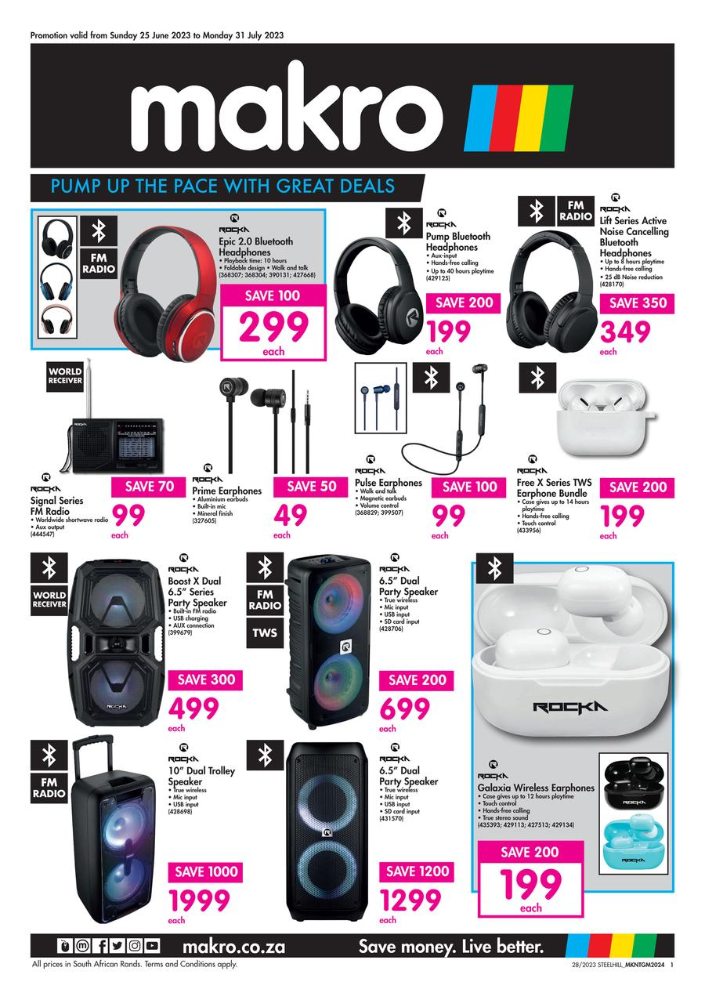

Makro is a Dutch international brand of warehouse clubs, also called cash and carry stores. Makro was founded by SHV Holdings, a Dutch conglomerate based in Utrecht in partnership with German company Metro AG, with the first warehouse club opened in Amsterdam in 1968. Currently, ownership of the worldwide chain of stores is split between different companies like Metro AG in Europe (except UK), SHV Holdings in Latin America (except Peru) and CP All in Asia. In many countries, access to stores is restricted to business customers, and the stores are not open to the general public.
WHERE TO FIND US
@NorthWest side of the mall
 


